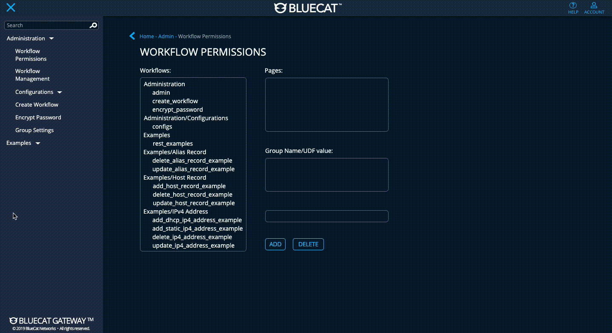
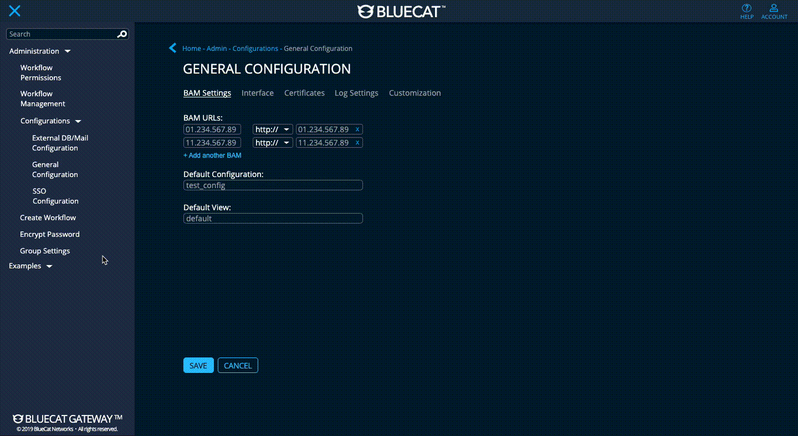
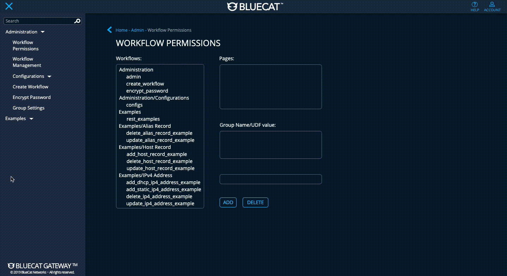
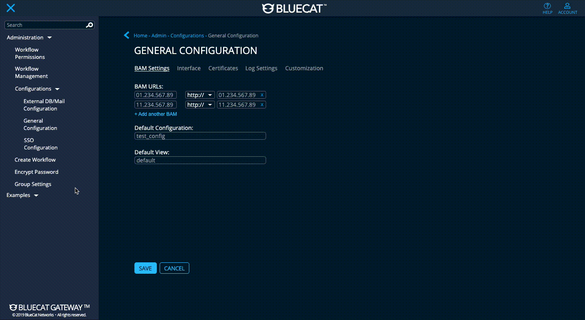
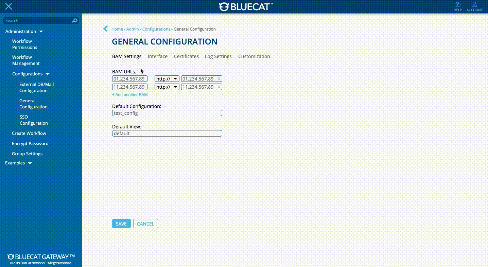
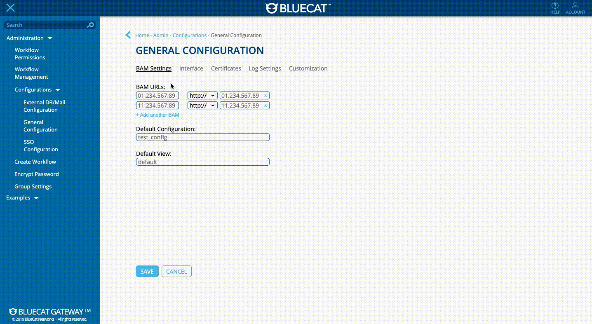

Context
The current UI of BlueCat Gateway is outdated compared to newer products such as BlueCat Edge. With this UI overhaul, the idea of a new dashboard concept is put to question as well. The goal is to establish a modernized design that will be the foundation of the product's UI for years to come. In addition, improve the user journey through the product.
It's an exciting experience to work on a project as the sole designer where I will make an impact at BlueCat for years to come. I need to design without interfering with how the client's use Gateway. Using Axure RP9 and Sketch, I designed (and am currently designing) a high-fidelity mockup that imitates a live version, with extensive depth into its interactions and usage to improve and streamline user satisfaction.
1. High Quality Solution
Good quality has a huge downstream impact around customer satisfaction, optimization of care resources, and ability to focus on strategic initiatives.
2. Gateway Re-architecture Initiative
Re-architect BlueCat Gateway to make it 100% stateless. This is beneficial for better deployment, orchestration, and scalability
Axure Rp, Sketch, InVision
February 2020 - April 2020 (still internally ongoing post-internship)
Data Visualization, Hi-Fi Prototyping, UI/UX Design, User Research
The new Gateway revamp concept brings along a new dashboard data visualization for automated workflows. Alongside the dashboard, the UI has been modernized with the BlueCat design system to match the newer and more modern BlueCat products.

Introduction
To understand what is required for the dashboard data visualization and UI changes, I needed to first understand who would be using it and their pain points with the current Gateway UI alongside the requirements/constraints for the modernization.
Persona: Network Admin

Maintain existing functionality, specifically show/hide BAM IP/domain, online help, and landing page
02Maintain functionality of custom image in banner
03Use more screen real estate:
· Current workflows use the default template (which is narrow) and the request is to make the template larger so that workflows use more page real estate
· How will a default change to the template affect existing customers?
The initial thought process for this project is to improve the users’ experience with the product. One of the challenges was to refresh the Gateway UI while keeping inline with Edge’s design system and layout to ensure uniformity between products. To reskin a flagship product, I have to ensure that the design satisfies all stakeholders without causing any risk to the project timeline and not to deviate from the purpose of Gateway.
The first step was to understand the clients' journey through Gateway. After conducting user research, it became clear that almost all customers and internal BlueCat employees disliked the current landing page and would go straight to the side menu. With that feedback, I decided to do a complete overhaul to give the landing page purpose.
Current BlueCat Gateway
Part 1 - Gateway Dashboard
To fit the paradigm of having a dashboard on all products, I thoroughly researched different landing page and dashboard concepts that could display workflows effectively while avoiding adding unnecessary information to the user. Compared to BlueCat Edge and Integrity, Gateway is not statistics driven, so I approached the dashboard with a general direction on how to improve usage of the front page.
Gateway Dashboard Concepts

When talking to the technical product manager of Gateway for feedback on my ideas, he leaned towards concept #3 that I drew out (see top-right concept on previous image). This concept drew inspiration from the Aha! dashboard (see below), where my idea has the workflows catagorized based on their usage. This required recording metrics, and the developers currently have a program set up to record the data locally for each client.
Aha Dashboard Inspiration

Current Gateway Dashboard

Dashboard Concept as of February 10, 2020

See the up-to-date mockups here: https://6glx6p.axshare.com
The mockup for the Gateway dashboard (seen above) that I constructed catagorizes workflows based on the user's usage of those workflows and the names of the the workflows followed by who has access to it. The way I designed this is to allow for the user to have faster access to their desired workflows, prioritizing the efficiency of the user's taskflow when on Gateway.
After getting feedback from the Internal Gateway Board Members, they mentioned key insights:
For the dashboard design, only have the frequent usage column
· From the perspective of the user, the frequent usage column is the only section necessary for their using
· From the standpoint of an admin, having information to the usage of each workflow is interesting to have
02Would the usage columns be for overall usage between all the users in that company using Gateway? Or would it be an individual's usage?
· If for the user, it could be recently used instead of frequent usage
The next version instead combines the usages into a list view, making it still take up screen real estate and provide value to the Network Admins every time they log in by putting it in one column.
Dashboard Concept v2

See the up-to-date mockups here: https://6glx6p.axshare.com
By the end of my internship, this was the state of the Gateway Dashboard. The next step with this is to launch the prototype to an internal clientale for their feedback on the value of this change.
Part 2 - Gateway UI
After having a meeting with the technical product manager about an update, it was noted by internal customer stakeholders that BlueCat Integrity is the main product of BlueCat and Gateway is a product that supports Integrity. Due to this, the stakeholders have a strong preference that the UI color scheme of Gateway resemble Integrity (bright colors). With the mockups resembling Edge's design system, the Integrity UI colour scheme for Gateway needs to be a separate design entirely.
Gateway UI needs to resemble BlueCat Edge
As a second level requirement for the Gateway UI refresh, investigate the option of providing a Light Mode that resembles the UI of BAM 9.2.0 (for reference, see below)
Do we provide the light mode as a plug-in via BlueCat Labs (GitHub) or
02Do we ship the HTML/CSS/JS files in the Gateway image to provide the functionality in the UI to switch between light and dark modes?
· Must keep in mind that Engineering wants to keep the size of the Gateway base file as small as possible
BAM 9.2.0 UI

The UI I created follows the design system for Edge, and the ask for a BAM UI look meant that I needed to integrate the BAM design system in a different file. My manager recently worked on a facelift for BAM (BAM 9.2.0), so I asked for the design system he made for the new UI look.
BlueCat Edge Design System


BAM 9.2.0 Design System


Using the BAM design system, I duplicated the Gateway design that I made for the Edge scheme and reskinned the UI. In addition to that, each page after the dashboard page has the navigation menu open to keep a consistent paradigm with the Edge interface, where it has the same concept to make it easier for the user to flow through the product.
Shown below are some of the currently designed pages for the Gateway UI as of February 28th (note: most pages have a recoloured layout, spacing fixes, and typography alignments - the pages have yet to be completely redesigned at this time).
Dark Mode Design
 



Light Mode Design

 

See the up-to-date mockups here: https://6glx6p.axshare.com
Recently, I presented the current mockups that have both the Edge styling and the BAM reskin to the director of BlueCat Gateway and two of the primary stakeholders to gain feedback on the direction of the UI design concept. It was well-received, and I took note of valuable insights towards where to go next.
Everyone loves the search function, where it allows the user to quickly search the name of their desired workflow
02They wondered about the functionality of the breadcrumbs:
· Clicking home or the back arrow button sends the user to the dashboard
· Clicking the parent directory opens the left navigation menu (if it was previously closed) to the section with that directory
After the reskin, the full-pledged UI updates would begin! (This was to gradually get the developers more onboard with the changes rather than suddenly having everything changed, causing more pushback)
Workflow Permissions Original

Workflow Permissions v1

Workflow Permissions v2

See the up-to-date mockups here: https://6glx6p.axshare.com
Conclusion / Reflection
With the final UI changes finished, the prototype will be sent out to the VIP channel (consisting of company/enterprise managers, network admins, etc.) on the BlueCat Slack for further user testing and feedback.
Having spearheaded the Gateway revamp, it gave me the opportunity to learn so much more about how to establish small changes to engineering and gradually update with more changes. Overall, I used interaction design and user-focused thought processes to re-imagine the data visualization of a product dashboard that contains no data aggregation.
Learning so much about translating design system details into new explorations of what can be changed, it brought a new mindset for me to move forward with. What is the reasoning behind why a component is where it currently is? Are the colours accessible and commonhouse in different products, or custom for the specific company? There's only so many ways to find out :)